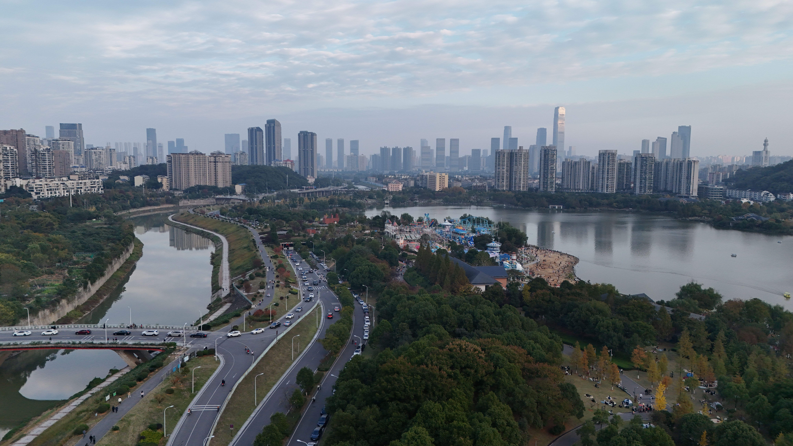

DESTINATION GUIDE

DESTINATION GUIDE
长沙依湘江而兴，是湖湘文化的重要承载地，也是中部地区充满活力的消费与创新城市。黄花国际机场、高铁与城际交通网络汇集，让岳麓山下的这座古城便捷联通全国。
地处湘江下游、湖南东部，是长株潭都市圈的重要城市。
亚热带季风气候
温暖湿润、四季分明，春季多雨，夏季炎热，秋季较为舒适，冬季湿冷。
楚汉时期已为重要城邑；马王堆汉墓与岳麓书院，为城市留下可感知的历史层次。
湖湘文化强调经世致用；现代传媒、艺术空间与年轻人的日常为其增添新的表达。
雨季路面湿滑，夏季炎热；景点之间可优先使用地铁与步行衔接。